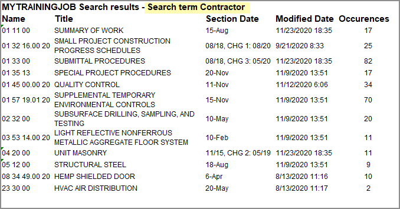

This command can also be executed from the SpecsIntact Explorer's Right-click menu.
The Export Search Results command provides the functionality to export the outcome of the most recently executed search operation on the selected Job or Master.
The search results are temporarily stored in a Result Files folder. This folder is created inside either the  Jobs or
Jobs or  Masters folder, located at the bottom of your project folder list.
Masters folder, located at the bottom of your project folder list.
You must navigate to the temporary Result Files folder to execute the Export Search Results command.
 This temporary Result Files folder exists only while SpecsIntact is open and will be removed when you close the application.
This temporary Result Files folder exists only while SpecsIntact is open and will be removed when you close the application.
Executing the Export Search Results command from here will create a file named 'SearchResults.htm'. This export file will be located in the Jobs or Masters Exports folder within SpecsIntact Explorer. To keep a copy of the exported search results and prevent them from being overwritten by subsequent searches, make sure to rename the file to give it a unique, identifiable name (e.g., SearchResults - Contractor.htm) immediately after exporting. The generated exported files can be accessed through your preferred web browser, Microsoft Excel, or shared through email.
 The files within the temporary Results Files folder are your active working files. Do not delete them directly from this folder to prevent data loss.
The files within the temporary Results Files folder are your active working files. Do not delete them directly from this folder to prevent data loss.
 Exported Search Results for Contractor:
Exported Search Results for Contractor:

Users are encouraged to visit the SpecsIntact Website's Support & Help Center for access to all of our User Tools, including Web-Based Help (containing Troubleshooting, Frequently Asked Questions (FAQs), Technical Notes, and Known Problems), eLearning Modules (video tutorials), and printable Guides.
| CONTACT US: | ||
| 256.895.5505 | ||
| SpecsIntact@usace.army.mil | ||
| SpecsIntact.wbdg.org | ||